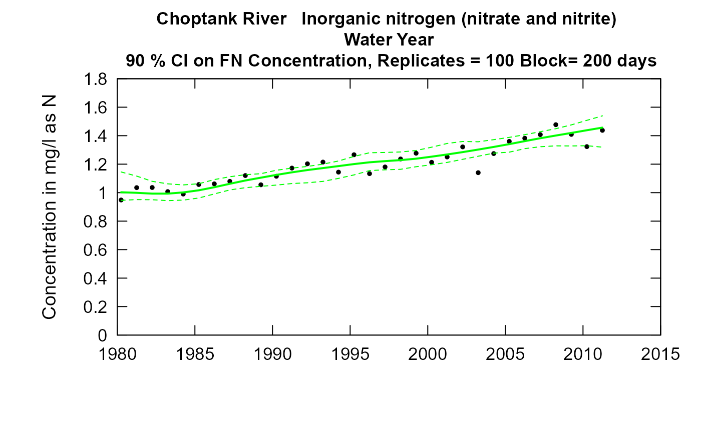
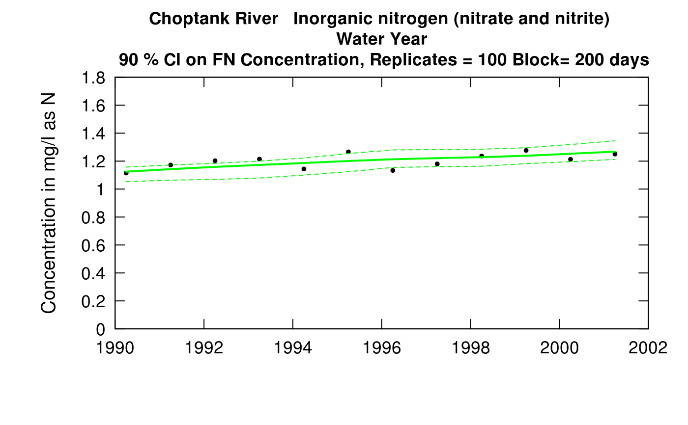

R/plotCIs.R
plotConcHistBoot.RdUses the output of modelEstimation in the EGRET package (results in the named
list eList), and the data frame CIAnnualResults (produced by the function ciCalculations in the EGRETci package
using scripts described in the EGRETci vignette) to produce a graph of annual
concentration, flow normalized concentration, and confidence bands for
flow-normalized concentrations. In addition to the arguments listed below,
it will accept any additional arguments that are listed for the EGRET function
plotConcHist.
plotConcHistBoot(eList, CIAnnualResults, yearStart = NA, yearEnd = NA, plotFlowNorm = TRUE, col.pred = "green", concMax = NA, plotAnnual = TRUE, plotGenConc = FALSE, cex = 0.8, cex.axis = 1.1, lwd = 2, col = "black", col.gen = "red", customPar = FALSE, printTitle = TRUE, cex.main = 1.1, ...)
| eList | named list with at least the Daily, Sample, and INFO dataframes. Created from the EGRET package, after running |
|---|---|
| CIAnnualResults | data frame generated from ciBands (includes nBoot, probs, and blockLength attributes). |
| yearStart | numeric is the calendar year containing the first estimated annual value to be plotted, default is NA (which allows it to be set automatically by the data). |
| yearEnd | numeric is the calendar year just after the last estimated annual value to be plotted, default is NA (which allows it to be set automatically by the data). |
| plotFlowNorm | logical variable if TRUE flow normalized concentration line is plotted, if FALSE not plotted, default is TRUE. |
| col.pred | character color of line for flow-normalized concentration and for the confidence limits, default is "green". |
| concMax | numeric specifying the maximum value to be used on the vertical axis, default is NA (which allows it to be set automatically by the data). |
| plotAnnual | logical variable if |
| plotGenConc | logical variable. If |
| cex | numeric value giving the amount by which plotting symbols should be magnified, default = 0.8. |
| cex.axis | numeric value of magnification to be used for axis annotation relative to the current setting of cex, default = 1.1. |
| lwd | numeric magnification of line width, default = 2. |
| col | color of annual mean points on plot, see ?par 'Color Specification', default = "black". |
| col.gen | color of annual mean points for WRTDS_K output on plot, see ?par 'Color Specification', default = "red". |
| customPar | logical defaults to FALSE. If TRUE, par() should be set by user before calling this function (for example, adjusting margins with par(mar=c(5,5,5,5))). If customPar FALSE, EGRETci chooses the best margins. |
| printTitle | logical print title of the plot, default = TRUE. |
| cex.main | numeric value of magnification to be used for plot title, default = 1.1. |
| ... | graphical parameters |
library(EGRET) eList <- Choptank_eList CIAnnualResults <- Choptank_CIAnnualResults plotConcHistBoot(eList, CIAnnualResults)plotConcHistBoot(eList, CIAnnualResults, yearStart=1990, yearEnd=2002)if (FALSE) { CIAnnualResults <- ciCalculations(eList, nBoot = 100, blockLength = 200) plotConcHistBoot(eList, CIAnnualResults) }